토목기사 (2014-03-20 기출문제)
1과목: 응용역학
1. 그림과 같은 2부재 트러스의 B에 수평하중 P가 작용한다. B절점의 수평변위 δв는 몇 m인가? (단, EA는 두 부재가 모두 같다.)
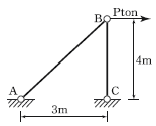
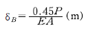
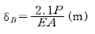
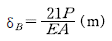
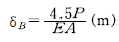
(정답률: 66%)

2. 그림과 같이 세 개의 평행력이 작용할 때 합력 R의 위치 x는?
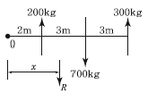
- 3.0m
- 3.5m
- 4.0m
- 4.5m
(정답률: 75%)
3. 동일평면상의 한 점에 여러 개의 힘이 작용하고 있을 때, 여러 개의 힘의 어떤 점에 대한 모멘트의 합은 그 합력의 동일점에 대한 모멘트와 같다는 것은 다음 중 어떤 정리에 대한 사항인가?
- Mohr의 정리
- Lami의 정리
- Castigliano의 정리
- Varignon의 정리
(정답률: 74%)
4. 단면과 길이가 같으나 지지조건이 다른 그림과 같은 2개의 장주가 있다. 장주 (a)가 3t의 하중을 받을 수 있다면 장주 (b)가 받을 수 있는 하중은?
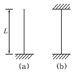
- 12t
- 24t
- 36t
- 48t
(정답률: 70%)
5. 그림과 같은 내민보에서 c점의 휨 모멘트가 영이 되기 위해서는 x가 얼마가 되어야 하는가?
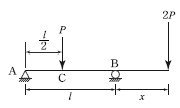
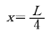
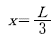
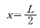
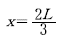
(정답률: 61%)
6. 그림의 AC, BC에 작용하는 힘 FAC, FBC의 크기는?
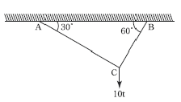
- FAC=10t, FBC=8.66t
- FAC=8.66t, FBC=5t
- FAC=5t, FBC=8.66t
- FAC=5t, FBC=17.32t
(정답률: 65%)
7. 다음 그림에서 처음에 P1이 작용했을 때 자유단의 처짐 δ1이 생기고, 다음에 P2를 가했을 때 자유단의 처짐이 δ2만큼 증가되었다고 한다. 이때 외력 P1이 행한 일은?
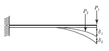
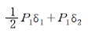
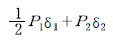
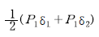
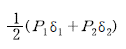
(정답률: 62%)
8. 그림과 같은 구조물에서 A지점에 일어나는 연직반력 R2를 구한 값은?
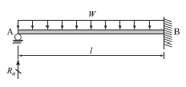
- 1/2wl
- 3/8wl
- 1/4wl
- 1/3wl
(정답률: 72%)
9. 그림과 같은 가운데가 비어있는 직사각형 단면 기둥의 길이가 L=10m일 때 이 기둥의 세장비는?
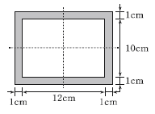
- 1.9
- 191.9
- 2.2
- 217.3
(정답률: 67%)
10. 다음 그림과 같은 r=4m인 3힌지 원호아치에서 지점 A에서 2m 떨어진 E점의 휨모멘트의 크기는 약 얼마인가?
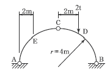
- 0.613t∙m
- 0.732t∙m
- 0.827t∙m
- 0.916t∙m
(정답률: 61%)
11. 그림과 같은 단순보의 단면에서 최대 전단응력을 구한 값은?
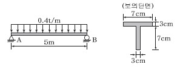
- 24.7kg/cm2
- 29.6kg/cm2
- 36.4kg/cm2
- 49.5kg/cm2
(정답률: 50%)
12. 아래 그림과 같은 단순보의 지점 A에 모멘트 Ma가 작용할 경우 A점과 B점의 처짐각 비
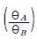
의 크기는?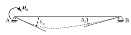
- 1.5
- 2.0
- 2.5
- 3.0
(정답률: 68%)
13. 반지름이 r인 중심축과, 바깥 반지름이 r이고 안쪽 반지름이 0.6r인 중공축이 동일 크기의 비틀림 모멘트를 받고 있다면 중공축이 동일 크기의 비틀림 모멘트를 받고 있다면 중실축:중공축의 최대 전단응력비는?
- 1 : 1.28
- 1 : 1.24
- 1 : 1.20
- 1 : 1.15
(정답률: 78%)
14. 다음 연속보에서 B점의 지점 반력을 구한 값은?
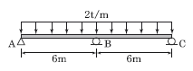
- 10t
- 15t
- 20t
- 25t
(정답률: 57%)
15. 다음과 같은 2축응력을 받고 있는 요소의 체적변형률은? (단, 탄성계수 E=2×106kg/cm2 포아송비 v=0.2 이다.)
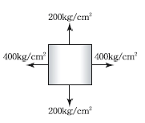
- 1.8×10-4
- 3.6×10-4
- 4.4×10-4
- 6.2×10-4
(정답률: 67%)
16. 보의 탄성변형에서 내력이 한 일은 그 지점의 반력으로 1차 편미분한 것은 "0"이 된다는 정리는 다음 중 어느 것인가?
- 중첩의 원리
- 맥스웰베티의 상반원리
- 최소일의 원리
- 카스틸리아노의 제1정리
(정답률: 66%)
17. 다음 그림과 같은 단순보의 중앙점 C에 집중하중 P가 작용하여 중앙점의 처짐 δ가 발생했다. Δ가 0이 되도록 양쪽지점에 모멘트 M을 작용시키려고 할 때 이 모멘트의 크기 M을 하중 P와 L로 나타내면 얼마인가? (단, EI는 일정하다.)
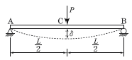
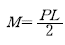
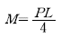
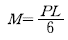
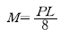
(정답률: 52%)
18. 균질한 균일 단면봉이 그림과 같이 P1, P2, P3의 하중을 B, C, D점에서 받고 있다. P2=8t, P3=4t의 하중이 작용할 때 D점에서의 수직방향 변위가 일어나지 않기 위한 하중 P1은 얼마인가?
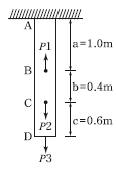
- 14.4t
- 19.2t
- 24.0t
- 28.6t
(정답률: 59%)
19. 아래 그림과 같은 트러스에서 응력이 발생하지 않는 부재는?
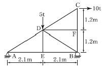
- DE 및 DF
- DE 및 DB
- AD 및 DC
- DB 및 DC
(정답률: 73%)
20. 다음 단면의 X-X축에 대한 단면 2차모멘트는?
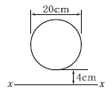
- 12880㎝4
- 252349㎝4
- 47527㎝4
- 69429㎝4
(정답률: 59%)
2과목: 측량학
21. 트래버스 측량의 작업순서로 알맞은 것은?
- 선점-계획-답사-조표-관측
- 계획-답사-선점-조표-관측
- 답사-계획-조표-선점-관측
- 조표-답사-계획-선점-관측
(정답률: 68%)
22. 도로공사에서 거리 20m 성토구간에 대하여 시작단면 A1=72m2, 끝단면 A2=182m2, 중앙단면 Am=132m2라고 할 때 각주공식에 의한 성토량은?
- 2540.0m3
- 2573.3m3
- 2600.0m3
- 2606.7m3
(정답률: 71%)
23. 사진측량에 대한 설명 중 틀린 것은?
- 항공사진의 축척은 카메라의 초저거리에 비례하고 비행고도에 반비례한다.
- 촬영고도가 동일한 경우 촬영기선길이가 증가하면 중복도는 낮아진다.
- 과고감은 지도축척과 사진축척의 불일치에 의해 나타난다.
- 입체시된 영상의 과고감은 기선고도비가 클수록 커지게 된다.
(정답률: 42%)
24. 20m 줄자로 두 지점의 거리를 측정한 결과 320m이었다. 1회 측정마다 ±3mm의 우연오차가 발생하였다면 두 지점간의 우연오차는?
- ±12mm
- ±14mm
- ±24mm
- ±48mm
(정답률: 68%)
25. 1600m2의 정사각형 토지 면적을 0.5m2까지 정확하게 구하기 위해서 필요한 변길이의 최대 허용오차는?
- 2mm
- 6.25mm
- 10mm
- 12mm
(정답률: 67%)
26. 지형측량을 할 때 기본 삼각점만으로는 기준점이 부족하여 추가로 설치하는 기준점은?
- 방향전환점
- 도근점
- 이기점
- 중간점
(정답률: 57%)
27. 하천 측량에 대한 설명 중 틀린 것은?
- 수위관측소의 설치 장소는 수위의 변화가 생기지 않는 곳이어야 한다.
- 평면측량의 범위는 무제부에서 홍수에 영향을 받는 구역보다 넓게 한다.
- 하천 폭이 넓고 수심이 깊은 경우 배를 이용하여 심천 측량을 행한다.
- 평수위는 어떤 기간의 관측수위를 합계하여 관측횟수로 나누어 평균값을 구한 것이다.
(정답률: 57%)
28. 각의 정밀도가 ±20"인 각측량기로 각을 관측할 경우, 각오차와 거리오차가 균형을 이루기 위한 줄자의 정밀도는?
- 약 1/10,000
- 약 1/60,000
- 약 1/100,000
- 약 1/600,000
(정답률: 66%)
29. 삼각점 A에 기계를 설치하였으나, 삼각점 B가 시준이 되지 않아 점 P를 관측하여 T'=68˚ 32' 15"를 얻었다. 보정각 T는? (단, S=2km, e=5m, φ=302˚ 56')
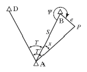
- 68˚ 25' 02"
- 68˚ 20' 09"
- 68˚ 15' 02"
- 68˚ 10' 09"
(정답률: 37%)
30. 표고가 각각 112m, 142m인 A, B 두 점이 있다. 두 점
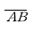
사이에 130m의 등고선을 삽입할 때 이 등고선의 A점으로부터 수평거리는? (단, AB의 수평거리는 100m이고, AB 구간은 등경 사이다.)- 50m
- 60m
- 70m
- 80m
(정답률: 59%)
31. 그림과 같은 유심다각망의 조정에 필요한 조건방정식의 총수는?
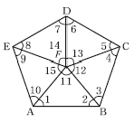
- 5개
- 6개
- 7개
- 8개
(정답률: 48%)
32. 우리나라는 TM도법에 따른 평면직교좌표계를 사용하고 있는데 그 중 동해원점의 경위도 좌표는?
- 129˚ 00' 00" E, 35˚ 00' 00" N
- 131˚ 00' 00" E, 35˚ 00' 00" N
- 129˚ 00' 00" E, 38˚ 00' 00" N
- 131˚ 00' 00" E, 38˚ 00' 00" N
(정답률: 59%)
33. D점의 표고를 구하기 위하여 기지점 A, B, C에서 각각 수준측량을 실시하였다면, D점의 표고 최확값은?
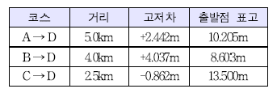
- 12.641m
- 12.632m
- 12.647m
- 12.638m
(정답률: 63%)
34. 캔트가 C인 노선에서 설계속도와 반지름을 모두 2배로 할 경우, 새로운 캔트 C는?
- 1/2C
- 1/4C
- 2C
- 4C
(정답률: 70%)
35. 구면 삼각형의 성질에 대한 설명으로 틀린 것은?
- 구면 삼각형의 내각의 합은 180˚보다 크다.
- 2점간 거리가 구면상에서는 대원의 호길이가 된다.
- 구면 삼각형의 한 변은 다른 두 변의 합보다 작고 차이보다 크다.
- 구과량은 구의 반지름 제곱에 비례하고 구면 삼각형의 면적에 반비례한다.
(정답률: 61%)
36. 축척 1:1000으로 평판측량을 할 때 도상에서 제도의 허용오차가 0.3mm라면, 중심맞추기 오차는 몇 ㎝까지 허용할 수 있는가?(오류 신고가 접수된 문제입니다. 반드시 정답과 해설을 확인하시기 바랍니다.)
- 5㎝
- 10㎝
- 15㎝
- 20㎝
(정답률: 50%)
37. 단곡선 설치에 있어서 교각 I=60˚, 반지름 R=200m, 곡선의 시점 B.C.=No.8+15m일 때 종단현에 대한 편각은? (단, 중심말뚝의 간격은 20m이다.)
- 38' 10"
- 42' 58"
- 1˚ 16' 20"
- 2˚ 51' 53"
(정답률: 44%)
38. 도로노선의 곡률반지름 R=2000m, 곡선길이 L=245m일 때, 클로소이드의 매개변수 A는?
- 500m
- 600m
- 700m
- 800m
(정답률: 68%)
39. 사진의 중심점으로서 렌즈중심으로부터 사진면에 내린 수직선이 만나는 점은?
- 주점
- 연직점
- 등각점
- 초점거리
(정답률: 50%)
40. 지구의 반지름 6370km, 공기의 굴절계수가 0.14일 때, 거리 4km에 대한 양차는?
- 0.108m
- 0.216m
- 1.080m
- 2.160m
(정답률: 58%)
3과목: 수리학 및 수문학
41. 개수로의 흐름에 대한 설명으로 틀린 것은?
- 개수로에서 사류로부터 상류로 변할 때 불연속적으로 수면이 뛰는 도수가 발생된다.
- 개수로에서 층류와 난류를 구분하는 한계 레이놀즈 수는 정확히 결정되어질 수 없으나 약 500정도를 취한다.
- 개수로에서 사류로부터 상류로 변하는 단면을 지배단면이라 한다.
- 배수곡선은 댐과 같은 장애물을 설치하면 발생되는 상류부의 수면곡선이다.
(정답률: 50%)
42. 수평면상 곡선수로 상류에서 비회전흐름인 경우, 유속 V와 곡률반지름 R의 관계로 옳은 것은?
- V=CR
- VR=C
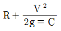
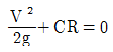
(정답률: 48%)
43. A 저수지에서 100m 떨어진 B 저수지로 3.6m3/s의 유량을 송수하기 위해 지름 2m의 주철관을 설치할 때 적정한 관로의 경사(I)는? (단, 마찰손실만 고려하고, 마찰손실계수 f=0.03이다.)
- 1/1000
- 1/500
- 1/250
- 1/100
(정답률: 50%)
44. 합리식에 관한 설명으로 틀린 것은?
- 첨두유량을 계산할 수 있다.
- 강우강도를 고려할 필요가 없다.
- 도시와 농천지역에 적용할 수 있다.
- 유출계수는 유역의 특성에 따라 다르다.
(정답률: 70%)
45. 비중 0.92의 빙산이 해수면에 떠 있다. 수면 위로 나온 빙산의 부피가 100m3이면 빙산의 전체 부피는? (단, 해수의 비중 1.025)
- 976m3
- 1025m3
- 1114m3
- 1125m3
(정답률: 52%)
46. 주어진 유량에 대한 비에너지(specific energy)가 3m이면, 한계수심은?
- 1m
- 1.5m
- 2m
- 2.5m
(정답률: 67%)
47. 작은 오리피스에서 단면수축계수 Ca, 유속계수 Cv, 유량계수 C의 관계가 옳게 표시된 것은?
- C=Cv/Ca
- C=Ca/Cv
- C=CvㆍCa
- C=Ca+Cv
(정답률: 70%)
48. 다음 표는 어느 지역의 40분간 집중 호우를 매 5분마다 관측한 것이다. 지속시간이 20분인 최대강우강도는?
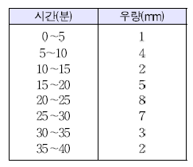
- I=49mm/h
- I=59mm/h
- I=69mm/h
- I=72mm/h
(정답률: 64%)
49. 물 속에 잠긴 곡면에 작용하는 정수압의 연직방향 분력은?
- 곡면을 밑면으로 하는 물기둥 체적의 무게와 같다.
- 곡면 중심에서의 압력에 수직투영 면적을 곱한 것과 같다.
- 곡면의 수직투영 면적에 작용하는 힘과 같다.
- 수평분력의 크기와 같다.
(정답률: 38%)
50. 수면표고가 18m인 정수장에서 직경 600mm인 강관 900m를 이용하여 수면표고 39m인 배수지로 양수하려고 한다. 유량이 1.0m3/s이고 관로의 마찰손실계수가 0.03일 때 모터의 소요 동력은? (단, 마찰손실만 고려하며, 펌프 및 모터의 효율은 각각 80% 및 70%이다.)
- 520kW
- 620kW
- 780kW
- 870kW
(정답률: 36%)
51. 관수로에서 마찰손실수두에 대한 설명으로 옳은 것은?
- 관수로의 길이에 비례한다.
- 관의 조도계수에 반비례한다.
- 후르드 수에 반비례한다.
- 관내 유속의 1/4제곱에 비례한다.
(정답률: 53%)
52. 지하수의 투수계수에 관한 설명으로 틀린 것은?
- 같은 종류의 토사라 할지라도 그 간극률에 따라 변한다.
- 흙입자의 구성, 지하수의 점성계수에 따라 변한다.
- 지하수의 유량을 결정하는데 사용된다.
- 지역에 따른 무자원 상수이다.
(정답률: 67%)
53. 단위유량도를 작성함에 있어서 주요기본가정(또는 원리)만으로 짝지어진 것은?
- 비례가정, 중첩가정, 시간불변성의 가정
- 직접유출의 가정, 시간불변성의 가정, 중첩가정
- 시간불변성의 가정, 직접유출의 가정, 비례가정,
- 비례가정, 중첩가정, 직접유출의 가정
(정답률: 48%)
54. 수리학적 완전상사를 이루기 위한 조건이 아닌 것은?
- 기하학적 상사(geometric similarity)
- 운동학적 상사(kinematic similarity)
- 동역학적 상사(dynamic similarity)
- 대수학적 상사(algebraic similarity)
(정답률: 63%)
55. 다음 중 강수 결측자료의 보완을 위한 추정방법이 아닌 것은?
- 단순비례법
- 이중누가우량분석법
- 산술평균법
- 정상연강수량비율법
(정답률: 52%)
56. 위어(weir)에 물이 월류할 경우에 위어 정상을 기준하여 상류측 전수두를 H라 하고, 하류수위를 h라 할 때, 수중위어(submerged weir)로 해석될 수 있는 조건은?
- h<2/3H
- h<1/2H
- h>2/3H
- h>1/3H
(정답률: 56%)
57. 개수로 흐름에 대한 Manning 공식의 조도계수 값의 결정 요소로 가장 거리가 먼 것은?
- 동수경사
- 하상 물질
- 하도 형상 및 선형
- 식생
(정답률: 46%)
58. 에너지선에 대한 설명으로 옳은 것은?
- 언제나 수평선이 된다.
- 동수경사선보다 아래에 있다.
- 동수경사선보다 속도수두만큼 위에 위치하게 된다.
- 속도수두와 위치수두의 합을 의미한다.
(정답률: 61%)
59. 수표면적이 10km2되는 어떤 저수지 수면으로부터 2m 위에서 측정된 대기의 평균온도가 25℃, 상대습도가 65%이고, 저수지 수면 6m 위에서 측정한 풍속이 4m/s, 저수지 수면 경계층의 수온이 20℃로 추정되었을 때 증방률(Eo)이 1.44mm/day이었다면 이 저수지 수면으로부터의 일증발량(Edav)은?
- 42300m3/day
- 32900m3/day
- 27300m3/day
- 14400m3/day
(정답률: 61%)
60. 경심이 5m이고 동수경사가 1/200인 관로에서의 Reynolds 수가 1000인 흐름으로 흐를 때 관내의 평균유속은?
- 7.5/s
- 5.5/s
- 3.5/s
- 2.5/s
(정답률: 39%)
4과목: 철근콘크리트 및 강구조
61. 그림과 같은 띠철근 기둥에서 띠철근의 최대 간격으로 적당한 것은?(오류 신고가 접수된 문제입니다. 반드시 정답과 해설을 확인하시기 바랍니다.)
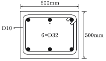
- 509mm
- 500mm
- 472mm
- 456mm
(정답률: 53%)
62. 그림과 같은 단면의 중간 높이에 초기 프리스트레서 900kN을 작용시켰다. 20%의 손실을 가정하여 하단 또는 상단의 응력이 영이 되도록 이 단면에 가할 수 있는 모멘트의 크기는?
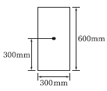
- 90kN∙m
- 84kN∙m
- 72kN∙m
- 65kN∙m
(정답률: 60%)
63. 철근콘크리트 부재에서 처짐을 방지하기 위해서는 부재의 두께를 크게 하는 것이 효과적인데, 구조상 가장 두꺼워야 될 순서대로 나열된 것은?
- 단순지지>캔틀레버>일단연속>양단연속
- 캔틀레버>단순지지>일단연속>양단연속
- 일단연속>양단연속>단순지지>캔틀레버
- 양단연속>일단연속>단순지지>캔틀레버
(정답률: 64%)
64. 다음 그림과 같은 맞대기 용접 이음에서 이음의 응력을 구하면?
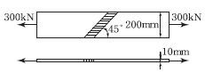
- 150.0MPa
- 106.1MPa
- 200.0MPa
- 212.1MPa
(정답률: 69%)
65. Mu=200kN·m의 계수모멘트가 작용하는 단철근 직사각형보에서 필요한 철근량(As)은 약 얼마인가?(단, b= 300mm, d=500mm, fck=28Mpa, fy=400Mpa, Φ= 0.85)
- 1072.7mm2
- 1266.3mm2
- 1524.6mm2
- 1785.4mm2
(정답률: 48%)
66. 그림과 같은 띠철근 단주의 균형상태에서 축방향 공칭하중(Pь)은 얼마인가? (단, fck=27Mpa. fy=400Mpa, Ast=4-D35=3800mm2)
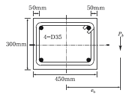
- 1360.9kN
- 1520.0kN
- 3645.2kN
- 5165.3kN
(정답률: 35%)
67. bw=250㎜, d=500㎜ fck=21MPa, fy=400MPa 인 직사각형보에서 콘크리트가 부담하는 설계전단강도(ΦVc)는?
- 71.6kN
- 76.4kN
- 82.2kN
- 91.5kN
(정답률: 58%)
68. 철근의 부착응력에 영향을 주는 요소에 대한 설명으로 틀린 것은?
- 경사인장균열이 발생하게 되면 철근이 균열에 저항하게 되고, 따라서 균열면 양쪽의 부착응력을 증가시키기 때문에 결국 인장철근의 응력을 감소시킨다.
- 거푸집 내에 타설된 콘크리트의 상부로 상승하는 물과 공기는 수평으로 놓인 철근에 의해 가로막히게 되며, 이로 인해 철근과 철근 하단에 형성될 수 있는 수막등에 의해 부착력이 감소될 수 있다.
- 전단에 의한 인장철근의 장부력(dowel force)은 부착에 의한 쪼갬 응력을 증가시킨다.
- 인장부 철근이 필요에 의해 절단되는 불연속 지점에서는 철근의 인장력 변화정도가 매우 크며 부착응력 역시 증가한다.
(정답률: 45%)
69. 복철근 직사각형 보의 As'=1916mm2, As=4790mm2이다. 등가 직사각형 블록의 응력 깊이(a)는?(단, fck=21Mpa, fy=300mpa)
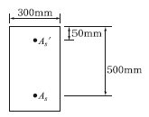
- 153mm
- 161mm
- 176mm
- 185mm
(정답률: 65%)
70. 강도 설계법에서 그림과 같은 T형보에서 공칭모멘트강도(Mn)는? (단, As=41-D25=7094mm2, fck=28MPa, fy=400MPa)
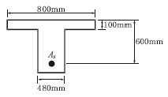
- 1648.3kN∙m
- 1597.2kN∙m
- 1534.5kN∙m
- 1475.9kN∙m
(정답률: 53%)
71. 콘크리트 구조기준에서는 띠철근으로 보강된 기둥의 압축지배단면에 대해서는 감소계수 Φ=0.65, 나선철근으로 보강된 기둥의 압축지배단면에 대해서는 Φ=0.70을 적용한다. 그 이유에 대한 설명으로 가장 적당한 것은?
- 콘크리트의 압축강도 측정시 공시체의 형태가 원형이기 때문이다.
- 나선철근으로 보강된 기둥이 띠철근으로 보강된 기둥보다 연성이나 인성이 크기 때문이다.
- 나선철근으로 보강된 기둥이 띠철근으로 보강된 기둥보다 골재분리현상이 적기 때문이다.
- 같은 조건(콘크리트 단면적, 철근단면적)에서 )사각형(띠철근) 기둥이 원형(나선철근 기둥보다 큰 하중을 견딜 수 있기 때문이다.
(정답률: 56%)
72. T형 PSC보에 설계하중을 작용시킨 결과 보의 처짐은 0이었으며, 프리스트레스 도입단계부터 부착된 계측장치로부터 상부 탄성변형률 ε=3.5×10-4을 얻었다. 콘크리트 탄성계수 Ec=26000MPa, T형 보의 단면적 Ag=150000, 유효율 R=0.85일 때, 강재의 초기 긴장력 P¡를 구하면?
- 1606kN
- 1365kN
- 1160kN
- 2269kN
(정답률: 41%)
73. 철근 콘크리트 보에 배치되는 철근의 순간격에 대한 설명으로 틀린 것은?
- 동일 평면에서 평행한 철근 사이의 수평 순간격은 25mm 이상이어야 한다.
- 상단과 하단에 2단 이상으로 배치된 경우 상하 철근의 순간격은 25mm 이상으로 하여야 한다.
- 철근의 순간격에 대한 규정은 서로 접촉된 겹침이음 철근과 인정된 이음철근 또는 연속철근 사이의 간격에도 적용하여야 한다.
- 벽체 또는 슬래브에서 휨 주철근의 간격은 벽체나 슬래브 두께의 2배 이하로 하여야 한다.
(정답률: 52%)
74. 프리스트레서의 손실 원인은 그 시기에 따라 즉시 손실과 도입 후에 시간적인 경과 후에 일어나는 손실로 나눌 수 있다. 다음 중 손실 원인의 시기가 나머지와 다른 하나는?
- 콘크리트 creep
- 포스트텐션 긴장재와 쉬수 사이의 마찰
- 콘크리트 건조수축
- PS 강재의 relaxalion
(정답률: 62%)
75. 지간(L)이 6m인 단철근 직사각형 단순보에 고정하중(자중포함)이 15.5kN/m, 활하중이 35kN/m 작용할 경우 최대 모멘트가 발생하는 단면의 계수 모멘트(Mu)는 얼마인가? (단, 하중조합을 고려할 것)
- 227.3kN∙m
- 300.6kN∙m
- 335.7kN∙m
- 373.2kN∙m
(정답률: 59%)
76. 인장응력 검토를 위한 L-150×90×12인 형강(angle)의 전개 총폭 bg는 얼마인가?
- 228mm
- 232mm
- 240mm
- 252mm
(정답률: 62%)
77. 경간이 8m인 PSC보에 계수등분포하중 w=20kN/m가 작용할 때 중앙 단면 콘크리트 하연에서의 응력이 0이 되려면 강재에 줄 프리스트레스힘 P는 얼마인가? (단, PS강재는 콘크리트 도심에 배치되어 있음)
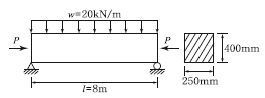
- P=2000kN
- P=2200kN
- P=2400kN
- P=2600kN
(정답률: 62%)
78. 비틀림철근에 대한 설명으로 틀린 것은? (단, Ack는 가장 바깥의 비틀림 보강철근의 중심으로 닫혀진 단면적이고, Pk는 가장 바깥의 횡방향 폐쇄스터럽 중심선의 둘레이다.)
- 횡방향 비틀림 철근은 종방향 철근 주위로 135˚ 표준갈고리에 의해 정착하여야 한다.
- 비틀림모멘트를 받는 속빈 단면에서 횡방향 비틀림철근의 중심선으로부터 내부 벽면까지의 거리는 0.5Ach/Ph 이상이 되도록 설계하여야 한다.
- 횡방향 비틀림 철근의 간격은 Ph/6 및 400mm 보다 작아야 한다.
- 종방향 비틀림철근은 양단에 정착하여야 한다.
(정답률: 60%)
79. 다음 주어진 단철근 직사각형 단면의 보에서 설계 휨강도를 구하기 위한 강도감소계수(Φ)는? (단, fck=28MPa, fy=400MPa)
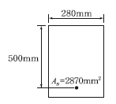
- 0.85
- 0.83
- 0.81
- 0.79
(정답률: 52%)
80. 옹벽의 설계에 대한 설명으로 틀린 것은?
- 부벽식 옹벽의 저판은 정밀한 해석이 사용되지 않는 한, 부벽 사이의 거리를 경간으로 가정한 고정보 또는 연속보로 설계할 수 있다.
- 활동에 대한 저항력은 옹벽에 작용하는 수평력의 1.5배 이상이어야 한다.
- 저판의 뒷굽판은 정확한 방법이 사용되지 않는한, 뒷굽판 상부에 재하되는 모든 하중을 지지하도록 설계하여야 한다.
- 무근콘크리트 옹벽은 부벽식 옹벽의 형태로 설계하여야 한다.
(정답률: 45%)
5과목: 토질 및 기초
81. 암질을 나타내는 황목과 직접관계가 없는 것은?
- N치
- RQD값
- 탄성파속도
- 균열의 간격
(정답률: 60%)
82. 압밀 시험에서 시간-압축량 곡선으로부터 구할 수 없는 것은?
- 압밀계수(Cv)
- 압축지수(Cc)
- 체적변화 계수(mv)
- 투수계수(K)
(정답률: 44%)
83. 말뚝기초의 지반거동에 관한 설명으로 틀린 것은?
- 연약지반상에 타입되어 지반이 먼저 변형하고 그 결과 말뚝이 저항하는 말뚝을 주동말뚝이라 한다.
- 말뚝에 작용한 하중은 말뚝주변의 마찰력과 말뚝선단의 지지력에 의하여 주변 지반에 전달된다.
- 기성말뚝을 타입하면 전단파괴를 일으키며 말뚝 주위의 지반은 교란된다.
- 말뚝 타입 후 지지력의 증가 또는 감소 현상을 시간효과(time effect)라 한다.
(정답률: 55%)
84. 연약지반개량공법 중 프리로딩공법에 대한 설명으로 틀린 것은?
- 압밀침하를 미리 끝나게 하여 구조물에 잔류침하를 남기지 않게 하기 위한 공법이다.
- 도록의 성토나 항만의 방파제와 같이 구조물 자체의 일부를 상재하중으로 이용하여 개량 후 하중을 제거할 필요가 없을 때 유리하다.
- 압밀계수가 작고 압밀토층 두께가 큰 경우에 주로 적용한다.
- 압밀을 끝내기 위해서는 많은 시간이 소요되므로, 공사기간이 충분해야 한다.
(정답률: 46%)
85. 암반층 위에 5m 두께의 토층이 경사 15˚의 자연사면으로 되어 있다. 이 토층은 c=1.5t/m2, Φ=30˚,rsat=1.8t/m3이고 지하수면은 토층의 지표면과 일치하고 침투는 경사면과 대략 평행이다. 이 때의 안전율은?
- 0.8
- 1.1
- 1.6
- 2.0
(정답률: 43%)
86. 크기가 30㎝×30㎝의 평판을 이용하여 사질토위에서 평판재하시험을 실시하고 극한 지지력 20t/m2을 얻었다. 크기가 1.8m×1.8m인 정사각형 기초의 총허용하중은 약 얼마인가? (단, 안전율은 3을 사용)
- 22ton
- 66ton
- 130ton
- 150ton
(정답률: 50%)
87. 흙의 투수계수 k에 관한 설명으로 옳은 것은?
- k는 점성계수에 반비례한다.
- k는 형상계수에 반비례한다.
- k는 간극비에 반비례한다.
- k는 입경의 제곱에 반비례한다.
(정답률: 56%)
88. 다음 중 흙의 연경도(consistency)에 대한 설명 중 옳지 않은 것은?
- 액성한계가 큰 흙은 점토분을 많이 포함하고 있다는 것을 의미한다.
- 소성한계가 큰 흙은 점토분을 많이 포함하고 있다는 것을 의미한다.
- 액성한계나 소성지수가 큰 흙은 연약 점토지반이라고 볼 수 있다.
- 액성한계와 소성한계가 가깝다는 것은 소성이 크다는 것을 의미한다.
(정답률: 47%)
89. 옹벽배면의 지표면 경사가 수평이고, 옹벽배면 벽체의 기울기가 연직인 벽체에서 옹벽과 뒷채움 흙 사이의 벽면마찰각(δ)을 무시할 경우, Rankine 토압과 Coulomb 토압의 크기를 비교하면?
- Rankine토압이 Coulomb토압보다 크다.
- Coulomb토압이 Rankine토압보다 크다.
- 주동토압은 Rankine토압이 더 크고, 수동토압은 Coulomb토압이 더 크다.
- 항상 Rankine토압과 Coulomb토압의 크기는 같다.
(정답률: 57%)
90. 그림과 같이 모래층에 널말뚝을 설치하여 물막이공 내의 물을 배수하였을 때, 분사현상이 일어나지 않게 하려면 얼마의 압력을 가하여야 하는가? (단, 모래의 비중은 2.65, 간극비는 0.65, 안전율은 3)
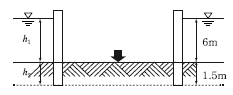
- 6.5t/m2
- 13t/m2
- 33t/m2
- 16.5t/m2
(정답률: 34%)
91. 아래의 경우 중 유효응력이 증가하는 것은?
- 땅속의 물이 정지해 있는 경우
- 땅속의 물이 아래로 흐르는 경우
- 땅속의 물이 위로 흐르는 경우
- 분사현상이 일어나는 경우
(정답률: 52%)
92. 내부마찰각 Φ=30˚, 점착력 c=0인 그림과 같은 모래지반이 있다. 지표면에서 6m 아래 지반의 전단 강도는?
- 7.8t/m2
- 9.8t/m2
- 4.5t/m2
- 6.5t/m2
(정답률: 58%)
93. 포화점토에 대해 베인전단시험을 실시하였다. 베인의 직경과 높이는 각각 7.5cm와 15cm이고, 시험 중 사용한 최대 회전 모멘트는 250kg·cm이다. 점성토의 액성한계는 65%이고 소성한계는 30%이다. 설계에 이용할 수 있도록 수정 비배수 강도를 구하면? (단, 수정계수(μ)=1.7-0.54 log(PI)를 사용하고 여기서 PI는 소성지수있다.)
- 0.8t/m2
- 1.40t/m2
- 1.82t/m2
- 2.0t/m2
(정답률: 39%)
94. 어떤 모래의 건조단위중량이 1.7t/m3이고, 이 모래의 라면, 상대밀도는?
- 47%
- 49%
- 51%
- 53%
(정답률: 46%)
95. 통일분류법에 의해 sp로 분류된 흙의 설명으로 옳은 것은?
- 모래질 실트를 말한다.
- 모래질 점토를 말한다.
- 압축성이 큰 모래를 말한다.
- 입도분포가 나쁜 모래를 말한다.
(정답률: 63%)
96. 다음 그림과 같이 점토질 지반에 연속기초가 설치되어 있다. Terzaghi 공식에 의한 이 기초의 허용지지력 qa는 얼마인가? (단, Φ=0 이며, 폭(B)=2m, Nc＝5.14, Nq＝1.0, Nr＝0, 안전율은 Fs=3 이다.)
- 6.4t/m2
- 13.5t/m2
- 18.5t/m2
- 40.49t/m2
(정답률: 48%)
97. 직경 30cm 콘크리트 말뚝을 단동식 증기해머로 타입하였을 때 엔지니어링 뉴스 공식을 적용한 말뚝의 허용지지력은? (단, 타격에너지＝3.6tㆍm, 해머효율＝0.8, 손실상수＝0.25cm, 마지막 25mm 관입에 필요한 타격횟수＝5)
- 64t
- 128t
- 192t
- 384t
(정답률: 42%)
98. 그림과 같이 같은 두께의 3층으로 된 수평 모래층이 있을 때 모래층 전체의 연직방향 평균 투수계수는? (단, k1, k2, k3는 각 층의 투수계수임)
- 2.38×10-3㎝/sec
- 4.56×10-4㎝/sec
- 3.01×10-4㎝/sec
- 3.36×10-5㎝/sec
(정답률: 55%)
99. 모래시료에 대해서 압밀배수 삼축압축시험을 실시하였다. 초기 단계에서 구속응력(σ3)은 100kg/cm2이고, 전단파괴시에 작용된 축차응력(σdf)은 200kg/cm2이었다. 이와 같은 모래시료의 내부마찰각(Φ) 및 파괴면에 작용하는 전단응력(Tf)의 크기는?
- Φ=30˚, Tf=115.47kg/cm2
- Φ=40˚, Tf=115.47kg/cm2
- Φ=30˚, Tf=86.60kg/cm2
- Φ=40˚, Tf=86.60kg/cm2
(정답률: 44%)
100. 흐트러지지 않은 연약한 점토시료를 채취하여 일축압축시험을 실시하였다. 공시체의 직경이 35mm, 높이가 80mm이고 파괴시의 하중계의 읽음값이 2kg, 축방향의 변형량이 12mm일 때 이 시료의 전단강도는?
- 0.04kg/cm2
- 0.06kg/cm2
- 0.08kg/cm2
- 0.1kg/cm2
(정답률: 37%)
6과목: 상하수도공학
101. 염소 소독시 생성되는 염소성분 중 살균력이 가장 강한 것은?
- NH2CI
- OCI-
- NHCI2
- HOCI
(정답률: 61%)
102. 하수처리장에서 480000L/day의 하수량을 처리한다. 펌프장의 습정(wet well)을 하수로 채우기 위하여 40분이 소요된다면 습정의 부피는 몇 m3인가?
- 13.3m3
- 14.3m3
- 15.3m3
- 16.3m3
(정답률: 56%)
103. 다음 지형도의 상수계통도에 관한 사항 중 옳은 것은?
- 도수는 펌프가압식으로 해야 한다.
- 수질을 생각하여 도수로는 개수로를 택하여야 한다.
- 정수장에서 배수지는 펌프가압식으로 송수한다.
- 도수와 송수를 자연유하식으로 하여 동력비를 절감한다.
(정답률: 57%)
104. 5일의 BOD 값이 100mg/L인 오수의 최종 BODu 값은? (단, 탈산소계수(자연대수)=0.25day-1)
- 약 140mg/L
- 약 349mg/L
- 약 240mg/L
- 약 340mg/L
(정답률: 40%)
1⑤. 어떤 상수원수의 jar-test 실험결과 원수시료 200mL에 대해 0.1% PAC 용액 12mL를 첨가하는 것이 가장 응집효율이 좋았다. 이 경우 상수원수에 대해 PAC 용액 사용량은 몇 mg/L인가?
- 40mg/L
- 50mg/L
- 60mg/L
- 70mg/L
(정답률: 43%)
106. 수원을 선정할 때 수원의 구비요건으로 틀린 것은?
- 수량이 풍부해야 한다.
- 수질이 좋아야 한다.
- 가능한 낮은 곳에 위치해야 한다.
- 수돗물 소비자에서 가까운 곳에 위치해야 한다.
(정답률: 69%)
107. 계획급수량 결정에서 첨두율에 대한 설명으로 옳은 것은?
- 첨두율은 평균급수량에 대한 평균사용수량의 크기를 의미한다.
- 급수량의 변동폭이 작을수록 첨두율 값이 크게 된다.
- 일반적으로 소규모의 도시일수록 급수량의 변동폭이 작아 첨두율이 크다.
- 첨두율은 도시규모에 따라 변하며, 기상조건, 도시의 성격 등에 의해서도 좌우된다.
(정답률: 49%)
108. 상수도의 도수 및 송수관로의 일부분이 동수경사선보다 높을 경우에 취할 수 있는 방법으로 옳은 것은?
- 접합정을 설치하는 방법
- 스크린을 설치하는 방법
- 감압밸브를 설치하는 방법
- 상류 측 관로의 관경을 작게 하는 방법
(정답률: 50%)
109. 복원중(정확한 내용을 아시는분 께서는 오류신고를 통하여 내용 작성 부탁 드립니다.)
- 복원중
- 복원중
- 복원중
- 복원중
(정답률: 21%)
110. 계획시간최대배수량의 식 에 대한 설명으로 틀린 것은?
- 계획시간최대배수량은 배수구역내의 계획급수인구가 그 시간대에 최대량의 물을 사용한다고 가정하여 결정한다.
- Q는 계획1일 평균급수량으로 단위는 [m3/day]이다.
- K는 시간계수로 계획시간최대배수량의 시간평균배수량에 대한 비율을 의미한다.
- 시간계수는 1일최대급수량이 클수록 작아지는 경향이 있다.
(정답률: 53%)
111. 부영양화된 호수나 저수지에서 나타나는 현상으로 옳은 것은?
- 각종 조류의 광합성 증가로 인하여 호수 심층의 용존산소가 증가한다.
- 조류사멸에 의해 물이 맑아진다.
- 바닥에 인, 질소 등 영양염류의 증가로 송어, 연어 등 어종이 증가한다.
- 냄새, 맛을 유발하는 물질이 증가한다.
(정답률: 60%)
112. 유출계수가 0.6이고 유연면적 2㎢에 강우강도 200mm/h의 경우가 있었다면 유출량은? (단, 합리식을 사용)
- 24.0m3/s
- 66.7m3/s
- 240m3/s
- 667m3/s
(정답률: 60%)
113. 하수도의 관거계획에 대한 설명으로 옳은 것은?
- 오수관거는 계획1일평균오수량을 기준으로 계획한다.
- 관거의 역사이펀을 많이 설치하여 유지관리 측면에서 유리하도록 계획한다.
- 합류식에서 하수의 차집관거는 우천시 계획오수량을 기준으로 계획한다.
- 오수관거와 우수관거가 교차하여 역사이펀을 피할 수 없는 경우는 우수관거를 역사이펀으로 하는 것이 바람직하다.
(정답률: 49%)
114. 혐기성 슬러지 소화조를 설계할 경우 탱크의 크기를 결정하는데 있어 고려할 사항이 해당되지 않는 것은?
- 소화조에 유입되는 슬러지 양과 특성
- 고형물 체류시간 및 온도
- 소화조의 운전방법
- 소화조 표면부하율
(정답률: 33%)
115. 최초 침전지의 표면적이 250m2, 깊이가 3m인 직사각형 침전지가 있다. 하수 350m3/h가 유입될 때 수면적부하는?
- 30.6m3/m2·day
- 33.6m3/m2·day
- 36.6m3/m2·day
- 39.6m3/m2·day
(정답률: 54%)
116. 일반적인 생물학적 질소 제거 공정에 필요한 미생물의 환경조건으로 가장 옳은 것은?
- 혐기, 호기
- 호기, 무산소
- 산소, 혐기
- 기, 혐기, 무산소
(정답률: 37%)
117. 우수조정지 설치에 대한 설명으로 옳지 않은 것은?
- 합류식 하수도에만 설치한다.
- 하류관거 유하능력이 부족한 곳에 설치한다.
- 하류지역 펌프장 능력이 부족한 곳에 설치한다.
- 우수조정지로부터의 우수방류방식은 자연유하를 원칙으로 한다.
(정답률: 57%)
118. 콘크리트 하수관의 내부 천정이 부식되는 현상에 대한 대응책으로 틀린 것은?
- 방식재료를 사용하여 관을 방보한다.
- 하수 중의 유황 함유량을 낮춘다.
- 관내의 유속을 감소시킨다.
- 하수에 염소를 주입한다.
(정답률: 63%)
119. 하수배제 방식에 대한 설명 중 틀린 것은?
- 분류식 하수관거는 청천시 관로내 퇴적량이 합류식 하수관거에 비하여 많다.
- 합류식 하수배제 방식은 폐쇄의 염려가 없고 검사 및 수리가 비교적 용이하다.
- 합류식 하수관거에서는 우천시 일정유량 이상이 되면 하수가 직접 수역으로 방류될 수 있다.
- 분류식 하수배제 방식은 강우초기에 도로 위의 오염물질이 직접 하천으로 유입되는 단점이 있다.
(정답률: 44%)
120. 급수방식에 대한 설명으로 틀린 것은?
- 급수방식은 급수전의 높이, 수요자가 필요로 하는 수량 등을 고려하여 결정한다.
- 직결식은 직결직압식과 직결가압식으로 구분할 수 있다.
- 저수조식은 수돗물을 일단 저수조에 받아서 급수하는 방식으로 단수나 감수시 물의 확보가 어렵다.
- 직결식과 저수조식의 병용방식은 하나의 건물에 직결식과 저수조식의 양쪽 급수방식을 병용하는 것이다.
(정답률: 65%)